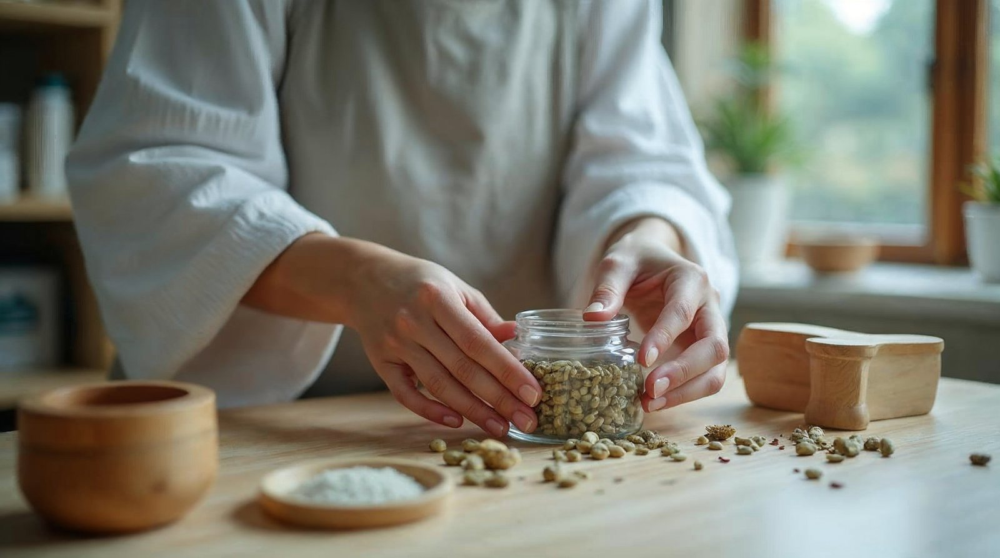
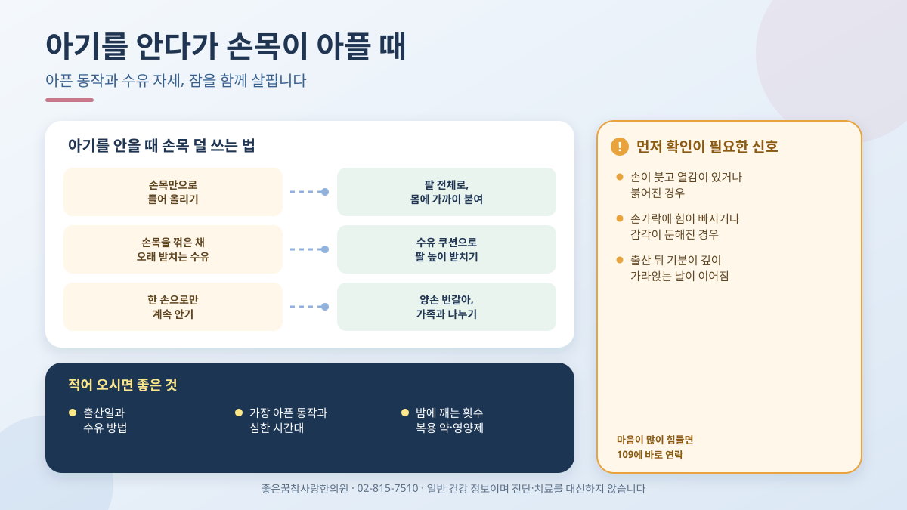

이종호 한의사 감수좋은꿈참사랑한의원 대표원장 (한의사 면허번호 19769)발행 2026-11-23 · 수정 2026-11-26
이 글의 차례
새벽 세 시, 아기 울음에 몸을 일으켜 수유 쿠션을 끌어당깁니다. 아기를 받쳐 드는 순간 손목 엄지 쪽이 시큰하게 울립니다. 출산 뒤 아기를 안다가 손목과 손가락이 아프다면, 저는 어떤 동작에서 아픈지와 안는 자세를 먼저 살피고, 수유 중인지 확인한 뒤 그에 맞는 방법을 함께 정합니다.
트림을 시키려고 들어 올릴 때, 기저귀를 갈려고 두 다리를 잡아 올릴 때, 잠든 아기를 눕히려고 허리를 숙일 때마다 같은 자리가 찌릿합니다. 하루에도 수십 번 되풀이되는 동작이라, 쉬라는 말이 가장 어렵게 들리는 통증이지요.
진료실에서 "수유 중이라 아무것도 못 먹는다"며 아파도 참는 분을 자주 뵙습니다. 그동안 얼마나 애쓰셨을까 싶습니다. 밤에 몇 번 깼는지 셀 겨를도 없이 아기부터 챙기다 보면, 내 손목은 늘 순서가 뒤로 밀립니다.
오늘은 그 손목 이야기를 조금 앞으로 당겨 보려 합니다. 아기를 덜 안을 수는 없으니, 같은 일을 하면서도 손목이 덜 지치는 방법을 찾는 쪽으로요.
왜 이런 불편이 생길 수 있나요
- 아기를 손목으로 받쳐 들어 올리는 동작은 엄지를 펴는 힘줄이 지나는 손목 엄지 쪽 통로에 부담을 줍니다.
- 수유하며 손목을 꺾은 채 오래 받치는 자세가 반복되면 손목과 손가락이 쉽게 지칩니다.
- 출산 뒤에는 몸이 붓고 회복 중이라 손목이 더 예민하게 느껴진다는 분이 많습니다.
- 밤중 수유로 잠이 쪼개지면 피로가 쌓이고 통증도 더 크게 느껴질 수 있습니다.
엄지는 다른 손가락과 마주 보며 집고, 쥐고, 받치는 일을 맡습니다. 엄지와 검지 사이를 벌려 아기 겨드랑이를 받쳐 드는 자세는 그 무게를 고스란히 엄지 쪽 손목에 모읍니다.
아기 몸무게는 하루가 다르게 늘어납니다. 그런데 안는 손 모양은 처음 그대로인 경우가 많습니다. 가볍던 때의 자세로 무거워진 아기를 들고 있으니, 손목이 먼저 신호를 보내는 셈입니다.
잠도 큰 몫을 합니다. 저는 '잠이 보약'이라는 말을 진료실에서 늘 붙들고 있습니다. 잠이 부족하면 같은 통증도 더 크게 느껴지고, 몸이 회복할 시간도 줄어듭니다. 아파서 깊이 못 자고, 못 자서 더 아프게 느끼는 고리가 생기기 쉽습니다.
왜 손목만 보지 않을까요
손목이 아프면 자연스럽게 팔꿈치와 어깨로 버티게 됩니다. 수유하며 고개를 숙이는 시간까지 길어지면 목과 등이 덩달아 굳고, 굳은 어깨는 다시 손목에 힘을 몰아줍니다. 그래서 손목을 보면서도 목과 어깨, 허리를 같이 여쭙습니다.
저는 잘 먹고, 잘 싸고, 잘 자고, 마음 편하고, 몸 따뜻한 것, 이 다섯 가지를 몸이 회복하는 바탕으로 봅니다. 출산 뒤에는 다섯 가지가 한꺼번에 흔들리기 쉽습니다. 끼니는 서서 때우고, 화장실은 미루고, 잠은 두세 시간씩 끊기니까요.
마음도 그렇습니다. 아기는 예쁜데 몸은 따라 주지 않고, 아프다고 말하기조차 미안한 날이 있습니다. 출산 뒤 기분이 깊이 가라앉는 날이 이어진다면 그 이야기도 편하게 꺼내 주세요.
그런 날들에 관해서는 출산 뒤 마음이 가라앉고 눈물이 날 때는 어떻게 살피나요?에 따로 적어 두었습니다. 손목과 함께 들어야 할 이야기라고 생각합니다.
엄지 쪽이 아픈지, 손끝이 저린지
같은 손목 통증이라도 아픈 자리에 따라 살필 방향이 달라집니다. 엄지 쪽 손목이 찌릿하고, 아기를 들어 올리거나 엄지를 움직일 때 더 아프다면 엄지를 움직이는 힘줄이 지나는 통로 쪽을 먼저 떠올립니다.
아프다기보다 엄지·검지·중지 끝이 저리고, 새벽에 손이 저려 깨는 날이 잦다면 손목 안쪽으로 지나는 신경 쪽도 살핍니다. 출산 뒤 붓기가 남아 있는 시기에 이런 저림을 말씀하시는 분도 있습니다.
두 가지가 섞여 있을 때도 있어서, 가장 아픈 자리를 손가락으로 짚어 보시라고 말씀드립니다. 제가 짐작한 자리와 가리키시는 자리가 조금 다르면 손을 옮겨 다시 봅니다.
자세한 구분은 아기를 안거나 휴대폰을 쥘 때 엄지 쪽 손목이 찌릿한 드퀘르뱅 건초염은 어떻게 살피나요?와 새벽에 손이 저려 깨는 손목터널증후군은 어떻게 살피나요?에 정리해 두었습니다.
아침마다 손가락 마디가 붓고 뻣뻣한 느낌이 피로, 붓기와 함께 오래 이어진다면 다른 확인이 먼저일 수 있습니다. 출산 뒤에는 갑상선 기능이 달라지는 경우도 있다고 알려져 있어, 이럴 때는 내과나 산부인과 확인을 먼저 권합니다.
하루 중 손목이 가장 바쁜 순간
손목 통증은 하루에도 오르내림이 큽니다. 언제 아픈지 순서대로 떠올려 보면 바꿀 수 있는 동작이 보입니다. 진료실에서 자주 듣는 순간들을 모아 보면 이렇습니다.
가장 먼저 꼽히는 것은 안아 올릴 때입니다. 선 채로 허리만 숙여 엄지로 겨드랑이를 집어 들기보다, 무릎을 굽혀 몸을 낮추고 손바닥 전체로 아기 머리와 목, 엉덩이를 받쳐 몸에 붙인 다음 일어서 보세요. 목을 아직 못 가누는 아기라면 머리와 목을 받치는 손이 먼저입니다.
수유할 때는 손목이 꺾인 채 오래 머뭅니다. 쿠션으로 아기를 가슴 높이까지 올리고 팔꿈치 아래에도 수건이나 쿠션을 받치면, 손목이 일자에 가깝게 쉴 수 있습니다.
젖병 뚜껑을 돌리고, 행주를 비틀어 짜고, 물티슈를 한 손으로 뽑는 일도 엄지 쪽 손목을 씁니다. 돌리고 비트는 일은 양손으로 나누거나 손바닥으로 눌러서 하면 덜 지칩니다.
수유하며 한 손으로 휴대폰을 쥐고 엄지로 화면을 넘기는 습관도 흔합니다. 거치대에 세워 두거나 잠시 내려놓는 것만으로도 엄지가 쉬는 시간이 생깁니다.
목욕시킬 때는 한 손으로 아기 목과 머리를 받친 채 오래 버텨야 합니다. 가능하면 두 사람이 함께하고, 준비물은 미리 손 닿는 곳에 두어 받치는 시간을 줄여 보세요.
아기띠를 쓰면 손목은 쉬지만 어깨와 허리가 대신 일합니다. 어깨끈과 허리 지지대를 몸에 맞게 조절하고, 아기가 자라면 끈 길이도 다시 맞춰 주세요.
먼저 이렇게 여쭙니다
처음 오시면 저는 대략 이런 순서로 여쭙습니다. 생각나는 것부터 말씀해 주셔도 괜찮습니다.
- 어떤 동작에서 가장 아픈가요?
- 아침에 손이 뻣뻣하거나 저린가요?
- 아기를 주로 어느 손으로 안으시나요?
- 현재 수유 중이신가요?
- 손목 말고 어깨나 허리도 불편한가요?
- 출산한 지 얼마나 되셨고, 밤에는 몇 번 깨시나요?
수유 중인지 여쭙는 데는 까닭이 있습니다. 한약은 약재마다 수유 중 안전성을 따로 살펴야 하고, 침과 약침, 온열도 지금 몸 상태에 맞는지 먼저 따져 봐야 하기 때문입니다. 그래서 한약 대신 다른 방법을 먼저 찾기도 합니다.
잠과 식사도 빼놓지 않습니다. 하루에 몇 시간쯤, 몇 번 끊어서 주무시는지, 끼니는 앉아서 드시는지 서서 급히 드시는지. 손목과 상관없어 보여도 회복의 바탕이 되는 이야기라서요.
스스로 점검해 보세요
아래 가운데 몇 가지가 해당되는지 세어 보세요.
- 아기를 들어 올릴 때 손목 엄지 쪽이 찌릿하다
- 병뚜껑을 돌리거나 행주를 짤 때 같은 자리가 아프다
- 새벽에 손끝이 저려 잠이 깬다
- 늘 같은 팔로만 아기를 안게 된다
- 수유가 끝나면 목과 어깨가 뻣뻣하다
- 밤에 세 번 넘게 깨는 날이 이어진다
- 끼니를 거르거나 서서 급히 먹는 날이 많다
여럿에 해당한다고 걱정하실 일은 아닙니다. 어디부터 살필지 알려 주는 단서이니, 표시해 두었다가 진료 때 보여 주세요.
이런 경우가 많습니다
예를 들어 아기가 자라 무거워졌는데도 처음처럼 손바닥을 위로 펴고 손목을 뒤로 젖혀 머리를 받치는 경우가 있습니다. 손목 안쪽이 오래 젖혀지면 저림이 따라올 수 있어, 안는 손 모양부터 다시 봅니다.
예를 들어 큰아이를 안아 주고 작은아이에게 수유하느라 양손이 쉴 틈이 없는 경우도 있습니다. 이럴 때는 하루 중 손을 가장 많이 쓰는 시간대를 찾아보고, 가족과 나눌 수 있는 일부터 정합니다.
예를 들어 아픈 쪽을 아끼느라 반대 손만 쓰다 보니, 몇 주 뒤 반대쪽 손목까지 시큰해진 경우도 있습니다. 아픈 쪽을 아끼는 만큼 성한 쪽에도 쉬는 시간을 주셔야 합니다.
얼마나 지켜보면 될까요
많이 안은 날 저녁에만 뻐근하고 하룻밤 자고 나면 가벼워진다면, 안는 손과 수유 자세를 바꿔 보며 1~2주 지켜볼 수 있습니다. 그사이 무엇을 바꿨는지 짧게 적어 두시면 좋습니다.
2주쯤 자세를 바꿔 봐도 엄지 쪽 시큰함이 그대로이거나, 아기를 들 때마다 찌릿해 안기가 겁난다면 지켜보기보다 진료를 받아 보시길 권합니다. 통증 때문에 밤에 깨는 날이 이어질 때도 마찬가지입니다.
작게 불편할 때 물어보시면 좋겠습니다. 크게 키워서 오시면 본인이 가장 힘듭니다. 복지관 어르신들께 드렸던 말씀인데, 아기를 돌보는 분께도 똑같이 드리고 싶습니다.
일상에서 먼저 해 볼 수 있는 것
- 아기를 들 때 손목만 쓰지 말고 팔 전체와 몸을 가까이 붙여 안기
- 수유 쿠션으로 팔 높이를 받쳐 손목 부담 줄이기
- 양손을 번갈아 쓰기
- 쉬는 틈에 손목을 따뜻하게 하고 가볍게 풀기
- 가족이 함께 있을 때 아기 들기를 나누기
- 아기가 잠든 사이 30분이라도 누워 쉬기
손목을 풀 때는 억지로 당겨 늘리기보다 스스로 움직이는 가벼운 동작을 권합니다. 아픈 엄지를 손바닥 안으로 꽉 접어 세게 늘리면 붓기가 있는 힘줄을 더 자극할 수 있습니다. 아프지 않은 범위에서 손을 폈다 쥐는 정도면 충분합니다.
오늘 한 번에 끝까지 돌리려 하지 않으셔도 됩니다. 되는 범위 안에서 조금씩 자주 움직이면 그 범위가 서서히 넓어질 수 있습니다.
따뜻하게 할 때는 15~20분쯤 하고 피부를 살펴 주세요. 하고 나서 시원하게 풀리면 이어 가고, 오히려 욱신거림이 늘면 멈춥니다. 막 아프기 시작해 화끈하고 부었다면 차가운 수건을 짧게 대는 편이 편할 수 있습니다.
약국에서 파스나 바르는 약을 고를 때도 수유 중이라고 먼저 말씀하세요. 파스는 몇 시간 붙였다가 떼어 피부를 쉬게 하고, 아기 살에 닿는 자리라면 더 조심하시는 편이 좋습니다.
몸을 지키는 순서를 여쭤보시면 저는 먼저 잘 쉬고, 아픈 것은 미루지 않고 치료하고, 그다음에 움직이는 것이라고 답합니다. 출산 뒤에는 그 첫 단추인 쉼이 가장 어렵지요. 가족에게 밤 수유나 목욕 한 번을 맡기는 일도 미안해하지 말고 부탁해 보셨으면 합니다.

한의원에서 함께 살필 수 있는 경우
- 육아 동작으로 손목과 엄지가 아픈 경우 아픈 동작과 주변 근육을 함께 살핍니다.
- 출산 뒤 손목, 어깨, 허리가 함께 불편한 경우 안는 자세와 몸의 균형을 함께 살핍니다.
- 잠이 부족해 피로가 쌓인 경우 회복 상태와 잠을 함께 살핍니다.
좋은꿈참사랑한의원에 오시면 접수 때 출산 시기와 수유 여부, 드시는 약과 영양제를 알려 주세요. 진료실에서는 양손을 올려 달라고 말씀드리고 맥부터 짚습니다.
맥을 짚으면서 아기를 돌보는 하루 일과와 아픈 동작, 잠과 식사, 붓기를 차근차근 여쭙습니다. 이어서 손목과 엄지를 움직여 보며 아픈 지점을 확인하고, 목과 어깨도 눌러 봅니다.
필요하다고 판단될 때는 초음파로 힘줄 주변을 살핍니다. 화면을 환자분 쪽으로 돌려 함께 보시도록 하는데, 어디가 불편한지 눈으로 보시면 설명이 한결 쉽게 와닿기 때문입니다.
침과 온열, 약침, 한약 가운데 무엇을 할지는 진찰 뒤 수유 중이라는 점을 함께 따져 상의해 정하고, 오늘 할 치료와 그 이유를 먼저 말씀드립니다. 한약은 원내에서 달이고, 약재는 제가 살핍니다.
함께 정한 치료는 가장 아픈 곳부터 원장이 직접 하고, 그 밖의 뭉친 곳은 직원이 온열·패드형 물리치료로 이어서 돌봅니다. 치료는 되도록 편안해야 한다고 생각합니다. 그래서 마치면 "시원하세요? 괜찮으세요?" 하고 여쭙고, 받는 중에 불편하면 바로 말씀해 주시면 됩니다.
제가 마음에 두고 있는 말이 있습니다. "우리 한의원은 잘 쉬다가는 곳." 치료받는 그 시간만큼은 손목도 마음도 잠시 내려놓고 쉬다 가셨으면 합니다.
귀가 전에는 아기를 안고 수유할 때 바꿔 볼 자세를 한두 가지만 골라 정합니다. 다시 오시는 날에는 해 보니 어땠는지, 무엇이 어려웠는지부터 여쭙고, 지키기 어려웠던 사정까지 들은 뒤 다음 이야기를 정합니다.
이렇게 기록해 오시면 상담이 쉬워집니다
- 출산일과 수유 방법(모유, 분유, 혼합)
- 가장 아픈 동작과 하루 중 심한 시간대
- 밤중에 깨는 횟수와 잠든 시간
- 복용 중인 약과 영양제
- 출산 뒤 산부인과에서 들은 내용
휴대폰 메모에 짧게 적어도 충분하고, 빠진 날이 있어도 괜찮습니다. 손목이 부었을 때 양쪽을 나란히 놓고 사진을 한 장 찍어 두시면 진료실에서 비교하기 좋습니다.
아기를 돌보는 손은 쉬는 법을 잊기 쉽습니다. 오늘도 그 손으로 참 많은 일을 하셨을 겁니다. 다 지키지 못한 날이 있어도 스스로를 탓하지 마시고, 다음 날 하나만 다시 해 보시면 됩니다.
다음에 오시면 아기를 안을 때 어느 순간이 가장 아팠는지부터 여쭙겠습니다.
이런 증상은 먼저 확인이 필요합니다
- 손이 붉게 붓고 뜨겁거나, 몸에 열이 나는 경우
- 스스로를 해칠 생각이 들면 ☎ 109로 바로 연락하세요.
이런 신호가 있으면 한의원보다 가까운 병원이나 응급실을 먼저 찾으세요.

여쭙는 것
- 어떤 동작에서 가장 아픈가요?
- 아침에 손이 뻣뻣하거나 저린가요?
- 아기를 주로 어느 손으로 안으시나요?
생활에서 해 볼 것
- 아기를 들 때 손목만 쓰지 말고 팔 전체와 몸을 가까이 붙여 안기
- 수유 쿠션으로 팔 높이를 받쳐 손목 부담 줄이기
- 양손을 번갈아 쓰기
한의원에서 함께 살필 것
- 육아 동작으로 손목과 엄지가 아픈 경우 아픈 동작과 주변 근육을 함께 살핍니다.
- 출산 뒤 손목, 어깨, 허리가 함께 불편한 경우 안는 자세와 몸의 균형을 함께 살핍…
- 잠이 부족해 피로가 쌓인 경우 회복 상태와 잠을 함께 살핍니다.
먼저 확인이 필요한 신호
- 손이 붉게 붓고 뜨겁거나, 몸에 열이 나는 경우
- 스스로를 해칠 생각이 들면 109로 바로 연락하세요.
한눈에 보는 표
| 구분 | 핵심 |
|---|---|
| 여쭙는 것 | 어떤 동작에서 가장 아픈가요? 아침에 손이 뻣뻣하거나 저린가요? |
| 생활에서 해 볼 것 | 아기를 들 때 손목만 쓰지 말고 팔 전체와 몸을 가까이 붙여 안기 수유 쿠션으로 팔 높이를 받쳐 손목 부담 줄이기 |
| 한의원에서 함께 살필 것 | 육아 동작으로 손목과 엄지가 아픈 경우 아픈 동작과 주변 근육을 함께 살핍니다. 출산 뒤 손목, 어깨, 허리가 함께 불편한 경우 안는 자세와 몸의 균형을 함께 살핍니다. |
| 먼저 확인이 필요한 신호 | 손이 붉게 붓고 뜨겁거나, 몸에 열이 나는 경우 스스로를 해칠 생각이 들면 109로 바로 연락하세요. |
자주 묻는 질문
수유 중에도 진료를 받을 수 있나요?
수유 중이라는 것을 먼저 알려 주세요. 침과 온열, 약침, 한약 모두 진찰 뒤 수유와 함께할 수 있는지 따져 보고 상의하며, 한약은 약재마다 안전성을 따로 살핍니다.
아기를 데리고 가도 되나요?
보호자와 함께 오시면 편하게 상담하실 수 있습니다. 방문 전 전화(02-815-7510)로 확인해 주세요.
손목 보호대를 해도 되나요?
엄지까지 감싸는 보호대를 잠시 쓰는 분들이 있습니다. 하루 종일 꽉 조이지 말고 손가락 색과 감각을 살피며 쓰시고, 맞는 형태는 진료 때 함께 봅니다.
진료 시간은 어떻게 되나요?
좋은꿈참사랑한의원은 평일 09:30~20:00(점심 13:00~14:00), 토·일·공휴일 09:30~15:00에 진료합니다.
좋은꿈참사랑한의원은 재진 때 지난번 이야기부터 이어서 여쭙니다. 진료시간과 예약은 오시는 길에서 확인하세요.
어디서 상담받을 수 있나요?
좋은꿈참사랑한의원은 서울 동작구 만양로2길 2 신성빌딩 3층·5층(서울 동작구 상도동, 7호선 상도역 3번 출구 근처)에 있습니다. 한의사 3명(이종호 대표원장, 조영기 수석진료원장, 정원영 진료원장)이 진료합니다. 진료시간은 평일 09:30~20:00(점심 13:00~14:00), 토·일·공휴일 09:30~15:00이며, 방문 전 전화로 확인을 권합니다. 예약은 네이버 예약, 카카오톡 상담, 전화 02-815-7510로 받습니다.
이 글은 일반적인 건강 정보이며 개인의 진단이나 치료를 대신하지 않습니다. 증상이 있거나 복용 중인 약이 있다면 진료를 통해 확인하세요. 치료 효과는 개인마다 다를 수 있습니다.
작성 기준: 일반적으로 알려져 있는 건강 정보를 참고해 정리했습니다(대표원장 감수). 증상 기록은 1~2주 동안 하루 1회, 비슷한 시간에 적어 오시면 지난 상태와 비교하기 쉽습니다.